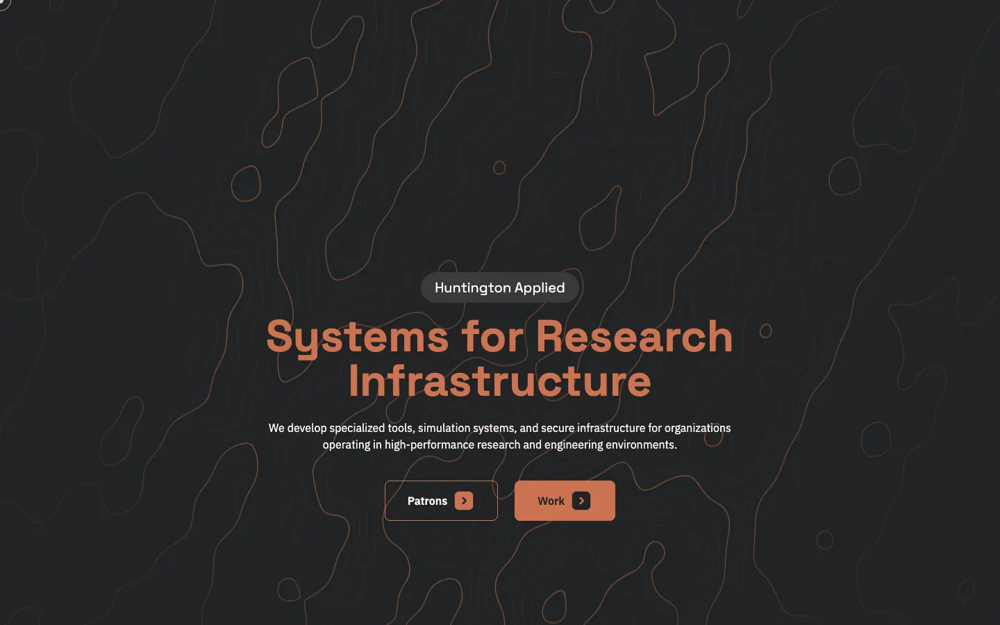
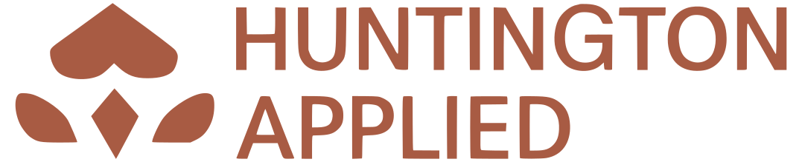
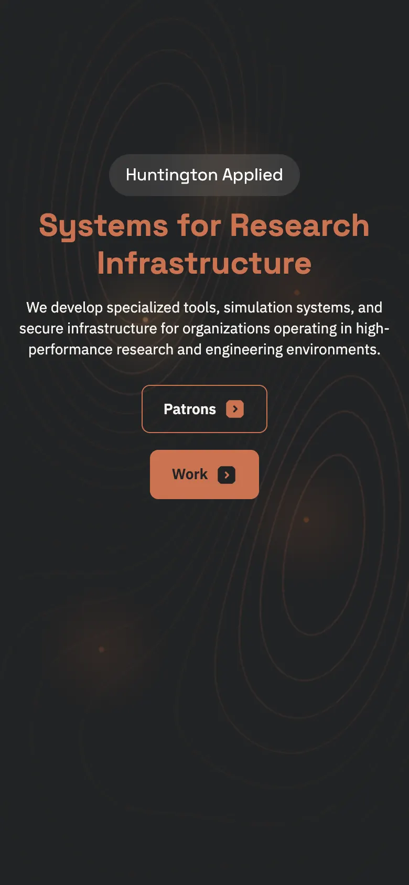

01
Huntington Applied
Identity · Website · Project-site system
An applied research company that builds simulation and infrastructure tools. The identity pairs a terracotta mark with warm charcoal and a topographic line field, and the same landing system carries across every project site below.
- Palette
-
- #A85B43
- #CC7351
- #222324
- #F1EFE8
- System
- Eyebrow pill, two-tone headline, paired calls to action, one accent colour per project.


Primary mark on charcoal
